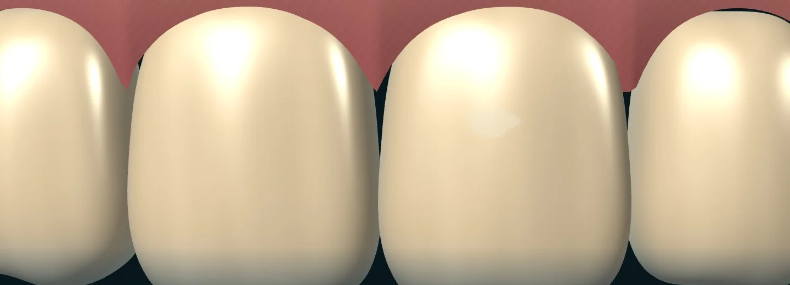

Bir görüntünün
içine bak.
Önce fotoğraf. Sonra sınırlar. En sonunda, o işaretlerin ne
anlattığı.
Bu görüntünün analizini adım adım izle.
Gönderilen örnek görselin animasyonla yeniden anlatımı. Maskeler temsilî olarak çizildi. Kaynaktaki 0,91 ve 0,96 skorları yeniden ölçülmedi. Klinik tanı için hekim değerlendirmesi gerekir.
01 / Çekim
Her şey
bir kareyle
başlıyor.
Telefonun kamerasını hazırladığını düşün. Yönlendirmeli çekim, ağız içindeki aynı bölgeyi doğru açı ve yeterli ışıkla görüntülemene yardımcı olur.
Bu deneyimde sentetik bir örnek kullanılıyor.

Bir işaret çizmek
işin başlangıcı.
Benim için asıl mesele, o işareti gören kişinin ne anlayacağıydı.
Diş hekimi korkusu, zaman ayıramamak ya da masraf kaygısı kontrolleri erteletebiliyor. DentAI fikri, ağız sağlığına evde daha dikkatli bakmayı ve gerektiğinde bir hekime ulaşmayı kolaylaştırma isteğinden doğdu.
Fotoğrafın kalitesi, yanlış alarmlar ve açıklamanın dili bu yüzden birlikte ele alındı. Aşağıda bu kararları kendin inceleyebilirsin.
Peki, perde arkasında
ne oluyor?
Bir ayrıntıyı değiştir.
O kararın akıştaki yerini gör.
CLAHE ile yerel kontrastı düzenledim. Buradaki sürgü bu adımın görsel mantığını anlatıyor. Gerçek işlem, OpenCV görüntü hazırlama hattında yapılıyor.
Parlayan her şey
bir bulgu mu?
Işık da beyaz görünür.
Tükürük yüzeyindeki parlama, açık renkli bir mine bölgesine benzeyebilir. Bu tür örnekleri eğitimde negatif örnek olarak kullanmak, modelin ayrımı öğrenmesine yardımcı olur.
Hard negative mining · Yanlış pozitifleri azaltmaya yönelik eğitim yaklaşımı
İyi bir açıklama,
iyi bir sınırla başlar.
Görüntüyü anlamlandıran modelin nasıl konuşacağını da tasarladım. Aşağıdaki örnek, bu yaklaşımı görünür kılmak için yeniden yazıldı.
Bir ağız içi görüntüsünde işaretlenen alanı, kişinin anlayabileceği kısa bir ön değerlendirmeyle açıkla.
Önce görevi tanımlıyorum.
Modelden işaretlenen bölgeye odaklanmasını istiyorum. Böylece açıklamanın hangi soruya yanıt vermesi gerektiği belirginleşiyor.
“İşaretlenen alan çevresindeki mineye göre daha açık görünüyor. Bunun nedenini yalnızca bu fotoğraftan belirleyemem.”
Her parçanın
bir görevi var.
Birbirine bağladığım bileşenler
ve ürün için düşündüğüm devamı.
Hazırlama ve kontrast
Bölge ve piksel maskesi
Görüntü ve bağlam
Birlikte çalışan demo
Hackathon prototipiGeliştirilen çalışma
Python görüntü işleme hattını, segmentasyon modelini ve Gemini açıklama katmanını Streamlit demosunda birleştirdim. Arayüzü CSS ile düzenledim ve sunum sırasında Colab ortamındaki demoya erişim için Localtunnel kullandım.
- Python
- OpenCV
- NumPy
- CLAHE
- PyTorch
- Ultralytics
- YOLOv8-Nano
- Instance Segmentation
- Hard Negative Mining
- Binary Cross-Entropy
- Gemini 2.0 Flash
- google-generativeai
- Multimodal AI
- Prompt Engineering
- Streamlit
- HTML / CSS
- Colab
- Localtunnel
- Node.js / npx
Mobil ve cihaz üzerinde işlemeÜrün geliştirme yönü
Tespit modelini mobil cihazda çalıştırmak için TensorFlow Lite ve FP16/INT8 nicemleme yaklaşımını ele aldım. Flutter ve Dart ile yönlendirmeli çekim ve reaktif arayüz, Firebase ve Firestore ile izinli hasta–hekim paylaşımı ürün planında yer alıyor. Çekim tutarlılığı için isteğe bağlı 3B makro lens aparatı da değerlendirildi.
Cihazdaki tespit ve uzaktaki Gemini açıklaması farklı veri akışlarıdır. Bulut açıklaması kullanıldığında hangi verinin iletildiği kullanıcıya açıklanmalı ve uygun izin alınmalıdır.
- TensorFlow Lite
- FP16 / INT8
- Quantization
- Edge AI
- NPU / GPU
- Flutter
- Dart
- State-driven UI
- Firebase
- Firestore
- NoSQL
- 3B makro lens
Kullanıcıdan kliniğePlanlanan B2B2C model
Temel taramanın ücretsiz sunulmasını, ileri analiz için aboneliği ve kişinin isteğiyle uygun bir diş kliniğine yönlendirilmesini planladım. Klinik tarafında, kullanıcının paylaştığı ön raporu okuyabilecek bir panel düşünülüyor. Premium abonelik, yönlendirme komisyonu ve klinik SaaS üyeliği planlanan gelir kalemleri.
Klinik doğrulama, cihazlar arasında performans ölçümü ve farklı çekim koşullarında güvenilirlik, ürünleşme sürecindeki değerlendirme başlıklarıdır. Tanı ve tedavi kararını hekim verir.
Bunu ben
geliştirdim.
Emre Küçükgöçer
Sivas Cumhuriyet Üniversitesi
Bilgisayar Mühendisliği öğrencisi
Türk-Alman Üniversitesi
Hackathon 2026
DentAI’ı bireysel olarak geliştirdim. Görüntü hazırlama, modelin bölgeyi işaretlemesi, Gemini’nin açıklaması ve demo arayüzü üzerinde çalıştım. En çok üzerinde durduğum konu, bu parçaların kullanıcı için anlaşılır bir sırayla birlikte çalışmasıydı.
Bu deneyimi Gemini Prompt Arena için hazırlarken, sonuca giderken aldığım kararları da görünür kılmak istedim. Buradaki her adım, projedeki bir soruya karşılık geliyor.